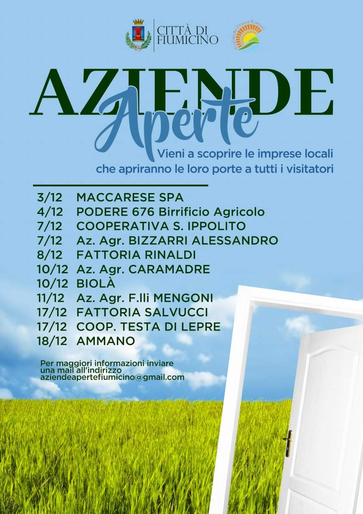

<section id="homepage">
    <div class="container">

        <div class="row pt-2 justify-content-md-center">
            <div class="col mx-2">
                <h2 class="text-center text-primary">
                    Attività in evidenza
                </h2>
            </div>
        </div>

        <div class="row pt-2 justify-content-md-center">
            <div class="col mx-2">
                
            </div>
        </div>
        
        <div class="row pt-2 justify-content-md-center">
            <div class="col mx-2">
                <h2 class="text-center text-primary">
                    Un territorio unico e meraviglioso alle porte di Roma,<br/>tutto da vivere, conoscere e degustare!
                </h2>
            </div>
        </div>

        <div class="row pt-2 justify-content-md-center">
            <div class="col">
                <div id="carouselExampleSlidesOnly" class="carousel slide" data-ride="carousel">
                    <div class="carousel-inner">
                        {% for item in site.data.carousel_img_list %}
                            {% if forloop.index == 1 %}
                            <div class="carousel-item active">
                            {% else %}
                            <div class="carousel-item">
                            {% endif %}
                                
                            </div>
                        {% endfor %}
                    </div>
                </div>
            </div>
        </div>

        <div class="row pt-4">
            <div class="col mx-2">
                <h5 class="text-center">
                    Il territorio del Biodistretto insiste sui Comuni di Fiumicino, Cerveteri e comprende totalmente la Riserva Naturale Statale del Litorale Romano.
                    Con una superficie di circa 37.000 ettari, è protetto da norme ambientali per circa l’80% della sua estensione, di cui 15.000,
                    totalmente irrigui è utilizzata per agricoltura professionale specializzata in orticoltura e foraggio-zootecnico
                    con un allevamento di bovini di circa 15.000 capi.
                </h5>
                <h5 class="text-center">
                    Nel territorio del Biodistretto sono presenti 50 aziende di agricoltura biologica che occupano 4.700 ettari,
                    le sei aziende agricole attualmente associate al Biodistretto ne rappresentano circa il 20%.
                </h5>
                <h5 class="text-center">
                    Oltre alle aziende agricole, nel Biodistretto partecipano anche aziende di servizi
                    che si occupano di precision farming e altre tecnologie innovative di controllo e gestione agronomica,
                    ed enti pubblici e privati interessati alla valorizzazione dell'agricoltura biologica e della gestione e fruizione del territorio,
                    con la partecipazione dei Comuni di Fiumicino e Cerveteri.
                </h5>
                <h5 class="text-center">
                    Per maggiori notizie sulle <a href="{{ site.baseurl }}/finalita">finalità</a> del Biodistretto Etrusco Romano e i suoi <a href="{{ site.baseurl }}/associati">associati</a> si rimanda alle rispettive pagine.
                </h5>
            </div>
        </div>
            
    </div>
</section>

